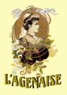

|
|
ENTRE PATRIMOINEETGASTRONOMIE AGENAIS
SAMEDI 27 MARS 2010
PRIX DE LA JOURNEE : 32 euros
RV 7 h 45 � départ 8 heures parking CARREFOUR PORTET (face à TOYS RUS)
VILLASCOPIA : découverte d'un site unique en France à Castelculier qui abrite les vestiges d'une vaste villa Gallo Romaine. Ce site présente 3 parties essentielles que sont le spectacle qui s'appuie sur une Scéno-vision : qui mêle les techniques du théâtre et du cinéma. Ce spectacle vous transportera au IVème siècle et laissera place aux souvenirs Gallo-romain. Ensuite, vous poursuivrez la visite avec l'exposition qui présente les différents objets recueillis sur le site et qui sont un témoignage de cette époque. Pour conclure la visite, vous vous rendrez dans le jardin archéologique qui abrite les vestiges de la villa Gallo-romaine. Route vers Agen.
AGEN  En après-midi : visite guidée de la vieille ville d'Agen , circuit comprenant les sites remarquables de la ville. Vous pourrez ainsi découvrir l'essentiel du patrimoine et de l'histoire d'Agen. Vous serez guidé le long des ruelles aux noms évocateurs : rue des Cornières, rue Richard C�ur de Lion, ruelle des Juifs� Vous pourrez ainsi embrasser d'un seul coup d'�il 2000 ans d'Histoire.
Dans un second temps VISITE D'UNE CONFISERIE , qui appartient à la même famille depuis 1846. La sixième génération de cette famille est actuellement aux commandes de cette prodigieuse entreprise. La réputation de ce lieu magique n'est plus à faire, vous y découvrirez toute l'histoire du pruneau d'Agen a travers un diaporama. Dégustation des spécialités de la maison. Route de retour, et arrivée aux alentours de 19 h 15/ 19 h 30
----------------------------------------------------------------------------------------------------------------- BULLETIN D'INSCRIPTION JOURNEE DU 27 MARS 2010 ENTRE PATRIMOINE ET GASTRONOMIE AGENAIS A retourner avant le 28 février 2010
Nom Prénom Adresse Nombre de participants Vous pouvez aussi réserver par téléphone : • sur le répondeur AZF 0562114 50 • ou auprès de Michelle AUZER 0676842177 Votre inscription ne sera définitive qu'à réception du chèque adressé à AZF-MEMOIRE ET SOLIDARITE. Aucun remboursement ne sera effectué
|
||
|
||